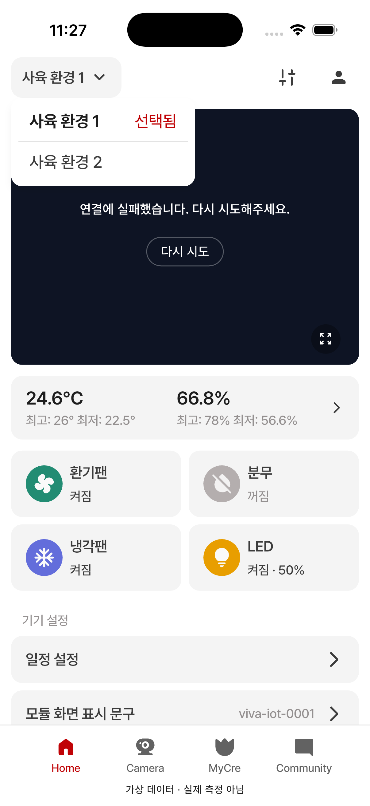
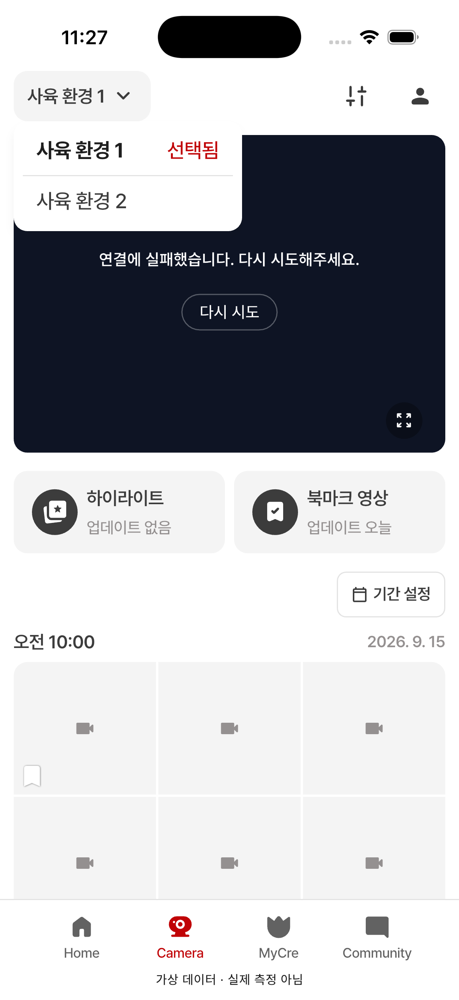
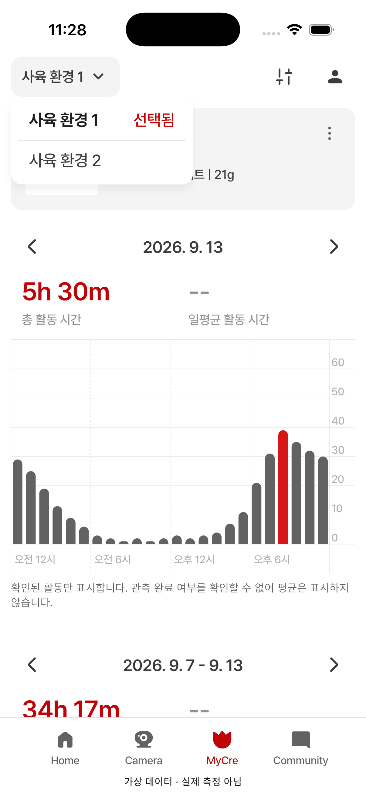

첫 검수 · 펼친 그룹 드롭다운
01 홈 · 02 카메라 · 03 MyCre
현재 제품 위젯 / 로컬 검수 데이터 / 앱 코드 변경 없음
규격 확인: 너비200 · 모서리12 · 행44 · 선택 Bold/빨강 ‘선택됨’ · 구분선
01 홈·02 카메라·03 MyCre 기본 배치 승인 · 그림자 보류
왼쪽은 이전에 승인한 Figma 원본입니다. 현재 디자이너 파일에서 같은 펼침 프레임을 아직 식별하지 못했습니다.
기기명·영상/측정값·안전영역 차이는 이번 판정에서 제외합니다. 실제 시뮬레이터 캡처를 논리 픽셀 크기로 표시합니다.
00 · 승인된 Figma 원본01 · 홈 — 기본 배치 승인
02 · 카메라 — 기본 배치 승인
03 · MyCre — 기본 배치 승인
검수 근거와 남은 확인사항